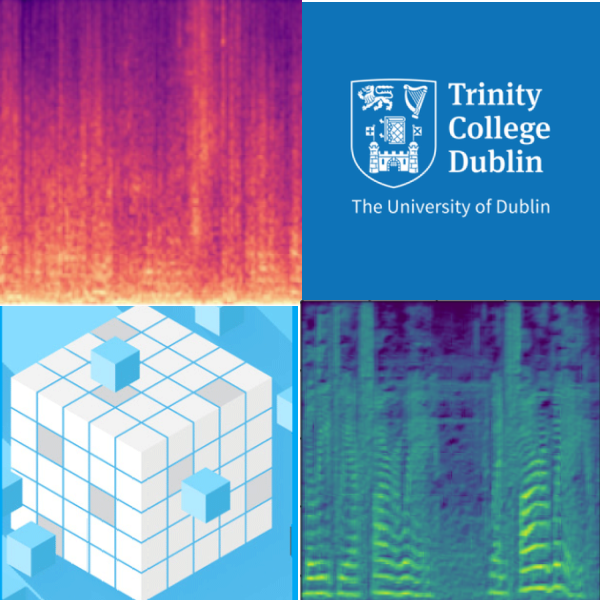

Speech Classification Research
Developing a Speech Interface for use in Assistive Service Robots.
This research was conducted as part of my engineering masters program and the continuation of work begun during a summer internship.

Research Focus
The focus of this research was to develop a direct speech classifier.
This is module that distinguishes between speech directed at the robot and other environmental noises.
What I did
- Comprehensive review of the state of the art.
- Developed ML model for classifiation.
- Complied a database for training, testing and vaildation.
- Benchmarked performance against existing solutions.
Problem Area
The worlds ageing population is increasing at a dramatic rate....
With the expected increase in the number of people over the age of 65, comes a need for more facilities to assist them in living independent lives. The current model of the care industry is not equipped to handle the impending surge in demand, so the sector is crying out for innovation. Assistive service robots may be part of the solution to this problem. There needs to be a way of controlling these devices and given the target users, voice control would appear the best option for a control interface.
Stage 1:
Speech Processing.
The first thing that needed to be decided on was a metric to judge the sound samples on. Through an extensive literature multiple speech properties were examined and compared until finally I settled on using Mel Frequency Spectrograms. It seemed like the perfect choice as the mel scale aplfies frequencies associated with human voice and the image based nature of the spectrogram made for easy integration into the CNN. Audio clips would be fed into a script to split the audio files in 4 second chunks.This strayed from the norm as sounds are usually analyzed in much shorter windows ( < 250ms). However I wasn't interested in the content of the speech (i.e exactly what someone was saying), just in the presence of speech in a sample so I did not need the same level of fidelity. Then each clip was converted from a wav file to a Mel Spectrogram using the Librosa library for Python.
Stage 2:
Creating the Dataset.
One major issue I found with previous research into speech classification with the size and quality of the datasets used. A lot of speech recognition models are trained on relatively small, clean datasets in laboratory condition. While this can be great for proof of concept, my research was more focused on on creating something to be used in a real-world setting therefore creating my own database was an essential part of the process. I used subsets of Google's AudioSet and the UrbanSound8K dataset along with field recordings in order to try and create a robust recognition model. Podcasts , Audiobooks and actual recordings of one sided conversations were used for the samples of direct speech. Ambient sounds such as kitchen noises, field recording of libraries ,cafes and hallways and other environmental sounds clips were used as the non speech classes. I also mixed speech and non speech samples together to varying degrees in order to discourage the model from overfitting to the training data. The dataset consisited of 20 hours of audio files, 10 hours of speech (50/50 male/female voices) and 10 hours of environmental noise (30% included some level of background coversation).
Stage 3:
Model Devlopment.
First step in model development was choosing a suitable benchmark. Since using CNN’s for speech classification was a relatively novel approach at the time there weren't many existing models that I could use freely for my research. Therefore I chose to split the benchmarking process into two sections; the application and the technology. The WebRTC VAD (voice activity detection) algorithm was chosen as the benchmark mark for my models performance at completing its classification task. The WebRTC model is considered one of the gold standards in Voice Activity Detection so it was an obvious choice to compare against.However it runs off completely different input parameters and uses a statistically model rather than and a neural network therefore I would have have to chose another model for comparison to see how well it was implemented. I chose both the ResNet 50 and VGG 19 for this purpose as they are well established open sourced image classification models . Using transfer learning I was able to adjust the model weights to fit my purpose using my new dataset. The custom convolutional neural network that was developed as part of this research combined the strived to both be light weight, like the WebRTC, so it could be used on smaller embedded systems but still mretain some of the powerful pattern recogniton adapibilty of the CNNs.
Stage 4:
Testing and Analysis.
For the testing the dataset was given a 70/20/10 split. 70% being used model training, 20% for validation and the remaining 10% remaining unseen by the model to ensure fair testing. Each model also was put through 3 classification tasks Binary(Speech/NonSpeech) 3 Class with added the background speech class and 6 Class in which the background noise was broken up into several subsections. The models computation time was also recorded. The models precision and recall were used as points of comparison. Precision being how many many times it correctly identified a sample and recall describing how well it could recognise a particular class. Both were then combined to get a full picture of each models accuracy. The neural networks were further dissected with layer activation information being extracted. This could allowed me to take a peek under the hood of these neural networks and get an idea of what patterns and feature were causing each layer to activate ,thus how the model was making its classification decisions.